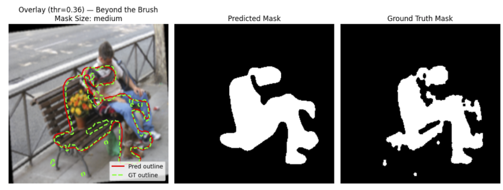

AI-EDITED IMAGE DETECTION
Trust what you see
in every image.
Upload a photo and instantly see where AI has altered it.
See the demo

Upload a photo and instantly see where AI has altered it.
See the demo
Generative AI has made credible fakes cheap and instant. Traditional fraud tools weren't built to understand pixels.
Claims, credit, and compliance teams are increasingly asked to rely on user-submitted photos. When those photos are wrong, the losses are real.
Modern AI inpainting tools produce edits that are nearly impossible to spot, even for trained reviewers on large screens.
A single "real/fake" score doesn't make a case. Pixel-level overlays give reviewers something they can screenshot, annotate, and share.
A clear mission and goal: make AI-edited images obvious, not invisible.
Build a reliable, scalable system that leverages machine learning to quickly and accurately detect AI-augmented sections of images.
Give reviewers and decision-makers the tools they need to know whether they can trust digital content before they act on it.
A focused workflow that fits into existing review processes instead of replacing them.
Drag-and-drop an image or paste a URL. The system runs detection in the background and returns an overlay in seconds.
See which parts of the photo were likely added, removed, or heavily altered. See what percentage of pixels have been altered.
Export image with mask overlay for claim notes, investigations, or internal documentation – no extra tooling required.
Behind the scenes, FakeImage Detector uses a segmentation model tuned specifically for AI-generated edits, wrapped in a simple web experience.
The image is validated, normalized, and resized so the model can process it reliably, regardless of the original source. Handles various formats, resolutions, and compression levels.
A computer vision model scans the image and outputs a per-pixel probability that each region has been synthetically altered. The model is trained on AI inpainting techniques.
The probabilities are converted into an overlay mask and rendered on top of the original so reviewers can see the suspicious areas instantly.
A lightweight Streamlit interface handles image uploads, runs inference through our PyTorch model, and visualizes the detection overlay for easy review and export.
High-level pipeline from raw datasets to a deployed detector.
Our ViT-based detector identifies AI-edited regions while staying robust across diverse scenes and edit types.
The model highlights edited regions (center) compared to the ground-truth mask (right), enabling reviewers to see where the image was altered, not just whether it was.
Watch how a reviewer uploads an image, inspects the overlay, and exports visual evidence.
FakeImage Detector is built by a small team of ML engineers and product builders focused on bringing transparency to AI-generated media.

Fred Nugen • Puya Vahabi